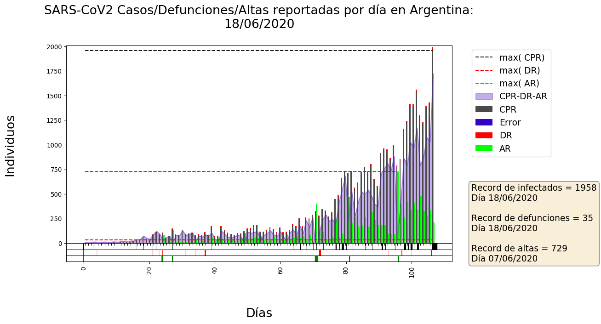

Visualizacion de datos historicos de la pandemia del Covid-19 a nivel Nacional y provincial (HASTA EL 17/06/2020)
Los datos fueron obtenidos de fuentes oficiales.
El codigo que use para generar los datasets, como tambien las representaciones graficas se puede encontrar al final de este notebook
El trabajo no está actualizado, y tiene errores, asi que NO usar con fines profesionales, academicos, etc.
Que notacion usamos:
Definiciones
donde n es el n-esimo dia desde el primer caso reportado
"Curva de infectados"
CPRA, (CPRA-DRA-ARA), DRA, ARA
Donde "I" puede verse como
"CPR por provincias"
"CPR a nivel nacional"
Bars Chart

Debajo del de plot se observan 3 grillas que muestran bandas de colores, cada una representa un maximo local en la linea del tiempo.
El grosor de cada banda depende de la diferencia de magnitud entre el record abatido y el anterior"
Defunciones sobre casos positivos, y defunciones sobre habitantes y casos positivos